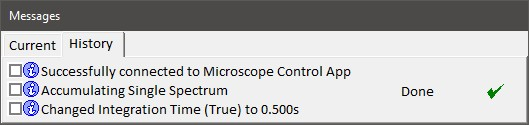
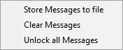

|
消息窗口
|
消息窗口是控制器硬件与用户之间的消息接口。在"历史记录"选项卡中，有一个按时间顺序排列的过往操作分类。
"当前"选项卡在测量期间自动选中，并显示当前操作以及该操作所需的剩余时间。

消息的性质可以通过消息前面显示的符号来识别。显示以下消息类型：
信息
此类消息仅包含有关控制器正在执行的过程中操作的信息。该符号旁边的消息描述向用户告知当前过程。
警告
如果控制器过程失败，将显示警告消息。
用户输入操作
控制器的一些例程是自动化的。然而，如果没有用户输入，它们无法完成。包含用户输入符号的消息描述了用户应完成的操作。
危险
危险消息表示硬件的严重问题。它们包含有关计算机与控制器之间的通信错误或电源故障的信息。
将鼠标悬停在消息上可获取包含更详细信息的工具提示。
复选框
使用复选框可以在"当前"和"历史记录"选项卡之间移动消息。
上下文菜单
可以通过在消息窗口中的任意位置单击鼠标右键来打开。

将消息存储到文件
将消息存储到文件
C:\ProgramData\WITec\WITec Suite X.X\Log Files\WITec Control\UserFeedbackLog.txt。
清除消息
清除上半部分所有未锁定的消息。
解锁所有消息
解锁下半部分的所有消息并将它们移到上半部分。